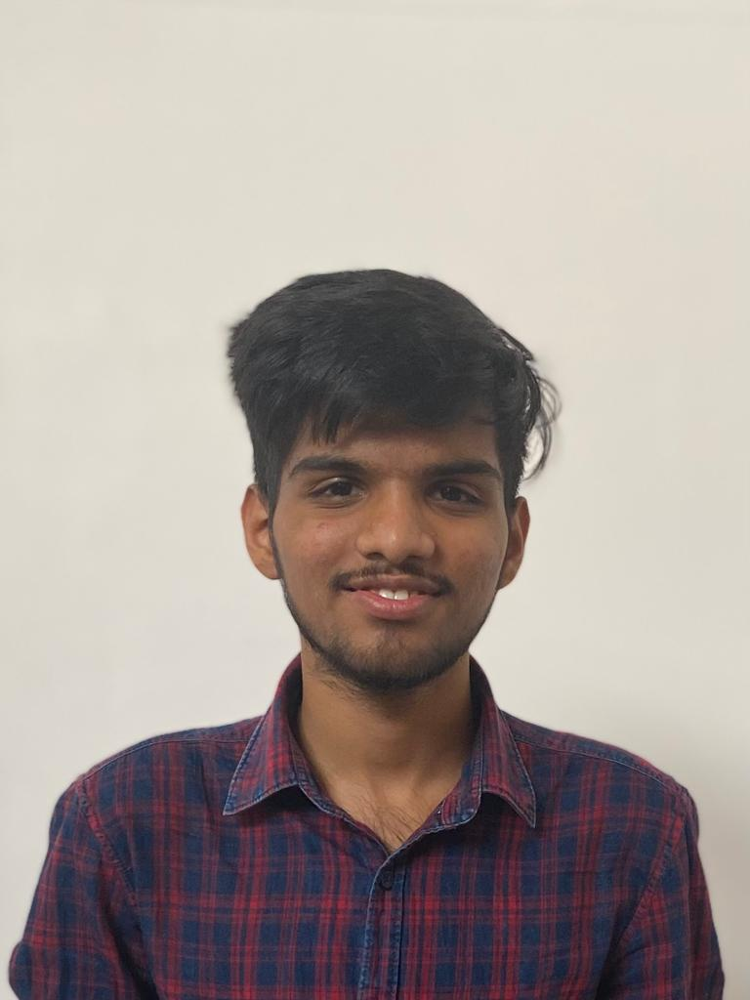

Fracture Detection of Hands
Detecting fractures using a dataset of 10,000 images to classify into fractured or not
Hello there! 👋 I'm passionate about the fascinating world of machine learning and TensorFlow. With a strong foundation in Python, C++, and Java, I embark on a journey where code transforms into intelligence.
B.tech (Electronics and communication engineering (AIML))
2021-present
9.04 CGPA
HSC , Global Public School ,Nashik
94.8 %
SSC , Purushottam English School ,Nashik
94.2 %